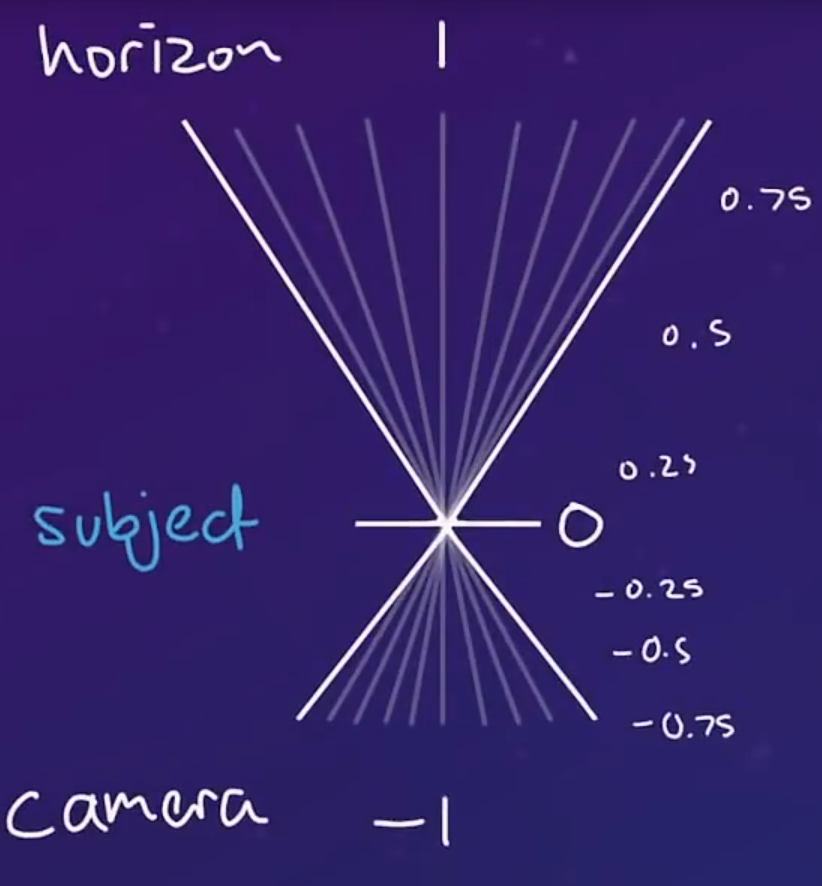

.NET是微软公司下的一个开发平台，.NET核心就是.NET Framwork（.NET框架）是.NET程序开发和运行的环境，在这个平台下可以用不同的语言进行开发，因为.NET是跨语言的一个平台。语言可以是C#,f#,j#,vb.net等等。JAVA和.NET不同的一点是java是跨平台的，不跨语言的。
.NET框架的组成分为两部分：
.NET运行的机制流程 各种语言（c#,F#,j#等对应的源程序）——>经过CLS,CTS第一次编译——>统一规范语言（中间语言）MSIL(.EXE,.DLL)——>JIT第二次编译——>二进制语言——>运行在CPU中
java的运行机制： java——>编译——>字节码文件（.CLASS）——>jvm解释（jvm虚拟机）——>二进制语言
调整摄像头，将投影模式调整为正交就可以显示出显示范围、调整视图大小
Time.deltaTime 计算上一帧运行经过的时间，广泛运用于角色的移动，给定速度（一般为每帧移动的距离）乘以该值，表示物体每秒移动的距离（不受帧率影响）
Physics2D.OverlapCircle等Overlap方法支持跨图层检测碰撞体（还可以通过添加第四个变量选择是否要命中触发器）
Animator.GetCurrentAnimatorStateInfo（0）（参数为层索引）返回包含有关当前动画状态的信息
animator.getcurrentanimatorstateinfo(layer).normalizedtime;获取当前动画的播放进度（0-1之间）
GameObject.GetComponent<>获取某游戏对象上的相应组件
collision2D类型要获取组件信息要用collider 即collision.collider.GetComponent<>
协程：当我们开启了一个协程后，主函数会开始执行协程中的内容，直到协程被暂停。协程被暂停后会立即返回到主函数，并继续执行主函数的剩余部分，直到暂停状态结束，协程恢复执行。
当希望想静态类那样直接使用某个非静态类中的方法时，可以在该类中实例化一个本类静态对象，并指向自己(this)
确保一个控制中心只实例化一个，或者想使用同一个对象时，有很多方法，上述就是其中一例，还可以通过在控制中心建立一个储存其他应用类的容器，如：状态机中的FSM，只实例化确定数的抽象类并向其内部传递FSM 。
也可以通过继承[ScriptableObject]将类转化为可创建的对象CreateAssetMenu，通过序列化传递给其他类
明确摄像机、被摄物体和场景之间的距离关系，以及距离产生的视差效果
物体的移动等于相机的移动再乘以视差

具体代码如下
public Camera cam;
public Transform subject;
Vector2 startPosition;
Vector2 travel => (Vector2)cam.transform.position - startPosition;
float distanceFromSubject => transform.position.z - subject.position.z;
float clippingPlane => (cam.transform.position.z + (distanceFromSubject > 0 ? cam.farClipPlane : cam.nearClipPlane));
float parrallaxFactor => Mathf.Abs(distanceFromSubject) / clippingPlane;
float startZ;
public void Start()
{
startPosition = transform.position;
startZ = transform.position.z;
}
public void Update()
{
Vector2 newPos = startPosition + travel * parrallaxFactor;
transform.position = new Vector3(newPos.x, newPos.y, startZ);
}
transform为当前背景，subject设定为玩家，cam为主摄像机
设置或刷新物体位置的方法：
相对父节点
transform.localPosition = new Vector3(x, y, z);
世界坐标
transform.position = new Vector3(x, y, z);
指PackManager中Unity官方提供的插件
过程
获取动画参数
帧事件
加载场景：
相机渲染滤镜Volume：
引用UnityEngine.Rendering
获取Volume中的其他部分： （以列表形式储存）
List<VolumeComponent> list = myVolume.profile.components;
OnEnable在脚本每次状态由false转变为true时调用：
1、GameObject添加组件的时候，即AddComponetScriptableObject添加时）
2、包含NewBehaviour的Prefab被实例化的时候；
3、已添加NewBehaviour的GameObject由未激活到已激活的时候，即setActive(true)；
4、NewBehaviour由不可用到可用的时候，即enabled=true（不用实例化对象，即挂载在Object上）。
Start
只在脚本第一次状态转变时调用，即对象的第一帧（必须实例化对象）
Awake
无论状态如何，在脚本对象实例化时调用一次（必须实例化对象）
A class you can derive from if you want to create objects that don't need to be attached to game objects.
用途有：数据复用（prefab）/共享、配置文件、编辑器编辑
用来在编辑器模式下保存和存储数据到本地Assets下的，数据保存以后是可以共享的，就像纹理、shader等资源一样，是可以共享于当前整个工程和其它工程的
这个ScriptableObject在真机上不可修改的，就像我们不可以在游戏运行时修改一个shader资源的代码、不可以修改一个纹理资源的像素内容一样，而在Unity Editor里可以修改ScriptableObject是因为Unity的编辑器对它格式的支持
当我们在编辑模式下修改了继承自 ScriptableObject 对象的数据文件内容时，修改的数据将被保存到磁盘上(点击Play不会改变，但想要重启Unity依旧不变，需要手动SaveAsset保存到磁盘)。但是在发布运行后，即使在游戏中修改了 ScriptableObject 的数据，改后的数据并不会保存在本地，重新打开运行时数据并还是配置的初始数据。
类似于普通的C# script类但可以在Unity Inspector窗口中编辑，可以通过menu/create实例化
Prefab实例化不会创建新的ScriptableObject，而是所有实例引用ScriptableObject（在Asset中实例化的唯一一个）的形式
我们可以利用 ScriptableObject 数据文件来制作编辑器相关功能，比如制作 Unity 内置的技能编辑器、关卡编辑器等。因为内置编辑器只在编辑模式下运行，在编辑模式下 ScriptableObject 正好具有数据持久化的特性。
需要注意的是ScriptableObject只能引用资产（asset），引用了未被序列化的对象会出现Type mismatch的问题，因为CreateInstance这类方法创建实例，只是创建在内存中，不会写入磁盘，完整的向ScriptableObject对象添加资产的方法应该包括AssetDatabase.AddObjectToAsset，将资产嵌入到已经序列化好的资产中（一般添加到当前ScriptableObject中）
public Node CreateNode(System.Type type){
Node node = ScriptableObject.CreateInstance(type) as Node;
//add unique guid for every node
node.name = type.Name;
node.guid = GUID.Generate().ToString();
nodes.Add(node);
AssetDatabase.AddObjectToAsset(node,this);
AssetDatabase.SaveAssets();
return node;
}
类名.方法名() 来在其他方法中调用回调函数指的是在使用过程中，被当作其他函数的参数使用/调用的函数
public void function<T> (T param) { }在参数列表前添加声明，使用时需要声明参数名class list<T> { }泛型类，在类中可以使用T作为变量类型Unity文件的唯一标识符
提供从加载到 Unity 域的程序集中进行快速类型提取的方法。
使用 TypeCache 可访问属性和派生的类型信息。此缓存允许从原生缓存数据中利用任意编辑器代码。
常见用例是在构建或扩展 Unity 编辑器时提取用特定属性标记的类型或用于扩展或实现特定类型的类。 在当前域中迭代类型的操作通常很慢，速度与类型数成线性关系。
为加速类型提取，编辑器在原生侧构建一个加速表，其中包含有关类型属性和派生类的信息。
s_VolumeComponents = TypeCache.GetTypesDerivedFrom<VolumeComponent>().ToList();
EditorUtility.SetDirty(object);将数据标记为脏数据，标记数据已改变IMGUIContainer UIElement that draw IMGUI contentInvoke("",delay)是Unity中的一种委托机制，支持延迟调用某个方法InvokeRepeating("",delay,duration)可在一段调用后重复执行using UnityEngine.Event
Unity的事件系统，不同于C#中的事件的是，UnityEvent允许你在Inspector界面中可视化添加和修改（就像Button中的点击事件添加那样）
以委托listener，事件onValueChange举例
public delegate void listener();?.Invoke//?.不为空时调用，否则返回null public event listener onValueChange;相当于已经定义好的委托类型
Action
Action<string,int> actionFunc
is is 运算符检查表达式结果的运行时类型是否与给定类型兼容。 is 运算符还会对照某个模式测试表达式结果。
E is T
如果表达式结果为非 null 并且满足以下任一条件，则 is 运算符将返回 true：
T。T、实现接口 T，或者存在从其到 T 的另一种隐式引用转换。T 且 Nullable.HasValue 为 true 的可为空值类型。T 的装箱或取消装箱转换。as as是一种安全的类型转换，当需要转化对象的类型属于转换目标类型或者转换目标类型的派生类型时，那么此转换操作才能成功，而且并不产生新的对象（当不成功的时候，会返回null）
typeof 运算符用于获取某个类型的 System.Type 实例。 typeof 运算符的实参必须是类型或类型形参的名称
添加约束：包括基类约束、构造函数约束、接口约束、参数约束等
public class FateherTest
{
}
//where的用法 接口约束IComparable 和构造函数约束new(), 基类约束 FatherTest
public class TestA<T> where T : FateherTest, IComparable, new()
{
}
public class TestB
{
//限制传递参数的类型必须继承IComparable 参数类型约束
public int Caculate<T>(T t) where T : IComparable
{
throw new NotImplementedException();
}
}
集合条件查询
Lambda 表达式 - Lambda 表达式和匿名函数 | Microsoft Learn
表达式lambda和语句lambda 可以看作一个匿名函数，=>前面表示参数，后面是函数体
表达式lambda，返回表达式结果
(input-parameters) => expression
语句lambda，与表达式lambda类似，不过语句写在{}中，而且没有默认返回
(input-parameters) => { <sequence-of-statements> }
在C# 6的版本里，=>开始用于expression-bodied members（表达式主体定义），代码如下：
public int MaxHealth1 => x ? y:z;
而这种语法，是一种Syntax Sugar，上面的代码等同于下面的：
public int MaxHealth1
{
get
{
return x ? y:z;
}
}
每次取MaxHealth1时都相当于调用一次函数
下列代码将实现每次变量被读取都将被计算(不是固定赋值)，状态为可读
Vector2 travel => (Vector2)cam.transform.position - startPosition;
####
在Unity程序中一般不会使用循环，是因为函数内的一切逻辑都会在同一帧内完成，所以需要使用到携程，使用协程，我们可以把一个跨越多帧的操作封装到一个方法内部。
定义：简单的说，协程就是一种特殊的函数，它可以主动的请求暂停自身并提交一个唤醒条件，Unity会在唤醒条件满足的时候去重新唤醒协程
使用协程，我们可以把一个跨越多帧的操作封装到一个方法内部
使用StartCoroutine()时可以接受其返回值，在禁用时传递该返回值
例子
游戏里面经常会出现类似的淡入淡出效果：“一个游戏物体的颜色渐渐变淡，直至消失。” 当你碰上了类似的需求，也许需要实现一个Fade()来实现这样的淡入淡出效果。
一个错误的实现是像这个样子的
//错误实现
void Fade()
{
float alpha = 1.0f;
while(alpha > 0)
{
alpha -= Time.deltaTime;
Color c = renderer.material.color;
c.a = alpha;
renderer.material.color = c;
}
}
这段代码的思路很简单：在函数中写一个循环，让渲染对象的alpha从1开始不断递减直至降为0。 但是，函数被调用后将运行到完成状态然后返回，函数内的一切逻辑都会在同一帧内完成。也就是说，上述Fade函数中的alpha从1递减到0的过程会在一帧内完成，如果你调用这个Fade函数，看到的将会是游戏物体瞬间消失，而不会渐渐淡出。
要解决这个错误也很简单，只需将函数改写成协程即可。
//正确实现
IEnumerator Fade()
{
float alpha = 1.0f;
while(alpha > 0)
{
alpha -= Time.deltaTime;
Color c = renderer.material.color;
c.a = alpha;
renderer.material.color = c;
yield return null;//协程会在这里被暂停，直到下一帧被唤醒。
}
}
//Fade不能直接调用，需要使用StartCoroutine(方法名(参数列表))的形式进行调用。
StartCoroutine(Fade());
像这种以IEnumerator为返回值的函数，在C#里面被称之为迭代器函数，在Unity里面也可以被称为协程函数。 当协程函数运行到yield return null语句时，协程会被暂停，unity继续执行其它逻辑，并在下一帧唤醒协程。
get 允许访问，可以返回该数据类型的一个值（可以是私有变量），必须包含return
set 允许修改，可以通过value赋值类中的一个值（可以是私有变量）
通常通过添加判断条件，用于限定赋值范围
public int Money //属性
{
//GET访问器，可以理解成另类的方法，返回已经被赋了值的私有变量money
get { return money; }
//SET访问器，将我们打入的值赋给私有变量money,并且加了限制，不能存负的
set
{
if (value >= 0)
{
money = value;
}
else
{
money = 0;
}
}
}
不为null时执行后面的操作。例如：
Person.Name?.Person.CodePerson.Name = Person == null ? null : Person.Code //两段代码等效允许将数据类型作为参数传递，对于想要通过传递不同的类类型来进行实例化很有帮助
C#中{ }除了划分层次之外，还起到了限定局部变量的作用，该层次定义的变量只能用于该{}内
本质是监查者模式，通过监听按键响应与自己添加的回调函数（在这里把自己定义的函数作为参数传递给按键相应事件）之间的订阅，实现操作
订阅方式：
InputSystemName.ActionMapName.ActionName.performed += (CallbackContext) => { }
perform为事件：public event Action<CallbackContext> performed;
其中CallbackContext中包括按键信息，由按键响应传递InputSystemName.ActionMapName.SetCallbacks(IActionMapNameActions instance)为某个action map中的所有事件添加回调事件，由于参数为一个必须实现所有Action的接口，因此此方法适用于创建一个管理按键的类，储存一些按键相关的通用操作，让该类继承IActionMapNameActions的接口，并实现/管理所有Actions，这样使用此订阅方式时直接传递this参数即可需要注意，ActionMap默认都为关闭状态，需要启用后再操作InputSystemName.ActionMapName.onEnable()
使用事件与委托实现
数值监听实例：
using UnityEngine;
/// <summary>
/// 对数值的监听
/// <para>@author reverie</para>
/// </summary>
[System.Serializable]
public class Listener
{
public delegate void listener(float val);
public event listener onBeginValueChanged;
public event listener onEndValueChanged;
[SerializeField] private float _beginTime = 0.0f;
[SerializeField] private float _endTime = 0.0f;
public float beginTime{
get{
return _beginTime;
}
set{
if(_beginTime == value) return;
onBeginValueChanged?.Invoke(value);
_beginTime = value;
}
}
public float endTime{
get{
return _endTime;
}
set{
if(_endTime == value) return;
onEndValueChanged?.Invoke(value);
_endTime = value;
}
}
}
设计罐头技能？
定制Unity
Unity - 手动：创建用户界面 （UI） (unity3d.com)
用于实现自己的窗口界面（类似于hierarchy、inspector）
点击之后Unity自动为你生成三个文件：UXML、C#、USS
可以在Editor窗口中类似于树形结构那样添加元素（有父子关系），因此称之为UIElement Visual Tree（就像Hierary中展现的那样）
这三个文件都可以都窗口的元素进行编辑，但是用途不完全一样
C#文件用于加载UXML、USS文件，同时：
// Each editor window contains a root VisualElement object
VisualElement root = rootVisualElement;
// VisualElements objects can contain other VisualElement following a tree hierarchy.
VisualElement label = new Label("Hello World! From C#");
root.Add(label);
Add：Add an element to this element's contentContainerUXML创建各种元素，但可以在UI Builder插件中可视化添加，还可以添加C#元素（VisualElement）
var visualTree = AssetDatabase.LoadAssetAtPath<VisualTreeAsset>("......");
VisualElement labelFromUXML = visualTree.Instantiate();
root.Add(labelFromUXML);
USS（样式表）创建想要的style sheet，可以在创建的元素（VisualElement）上使用SameVisualElementNode.styleSheets.Add(styleSheet)添加特定样式
var styleSheet = AssetDatabase.LoadAssetAtPath<StyleSheet>("......");
VisualElement labelWithStyle = new Label("Hello World! With Style");
labelWithStyle.styleSheets.Add(styleSheet);
root.Add(labelWithStyle);
Unity - Scripting API: EditorWindow (unity3d.com)
Unity - 手动：使用自定义 （C#） 元素 (unity3d.com)
构成EditorWindow的基础元素
Base class for objects that are part of the UIElements visual tree.
继承VisualElement允许在C# Script中添加到EditorWindow中
可视化：想要在UI Builder中使用自定义的C#元素（VisualElement子类） 需要添加UxmlFactory（用于每次图像化拖拽添加时，Unity通过工厂实例化新的自定义元素）， 之后便可以在UI Builder->Library->Project->Custom Control(C#)中找到
class MyElement : VisualElement
{
public new class UxmlFactory : UxmlFactory<MyElement, UxmlTraits> { }
}
可视化图形界面，继承了VisualElement
可以通过AddManipulator添加操作GraphView的操作功能
使用时一般独占EditorWindow，作为画布使用
创建之后便可以AddGraphView到想要的EditorWindow中
想要在UI Builder中可视化添加元素（添加在UXML），同样需要在GraphView中创建UxmlFactory
public new class UxmlFactory : UxmlFactory<BehaviourTreeView,GraphView.UxmlTraits> { }
<Style src = "......"/>语句挂载到UXML中CloneTree修改EditorWindow的根元素UnityEditor.Undo - Unity 脚本 API
Unity中Undo维护一个stack，UnityEditor.Undo提供一系列方法记录属性在撤销堆栈上
常用操作：
Undo.undoRedoPerformed 此事件执行撤销或重做后触发的回调
修改单个属性：
Undo.RecordObject (myGameObject.transform, "Zero Transform Position");
myGameObject.transform.position = Vector3.zero;
添加组件：
Undo.AddComponent<RigidBody>(myGameObject);
创建新的游戏对象：
var go = new GameObject();
Undo.RegisterCreatedObjectUndo (go, "Created go");
销毁游戏对象或组件：
Undo.DestroyObjectImmediate (myGameObject);
更改变换组件的父子化：
Undo.SetTransformParent (myGameObject.transform, newTransformParent, "Set new parent");